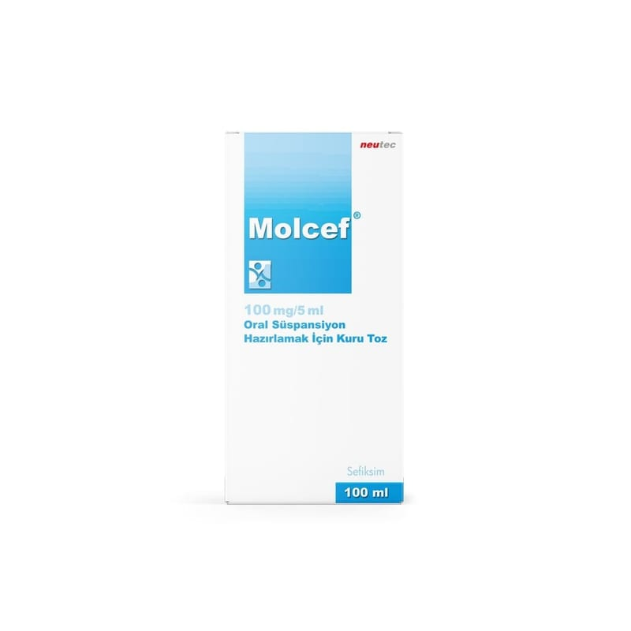

Molcef 100 mg/5 ml Oral Süspansiyon Hazırlamak İçin Kuru Toz, 100 ml

Ne için kullanılır
KT · Bölüm 1MOLCEF, sefiksim adlı bir ilaç etkin maddesini içermektedir. Bu ilaç sefalosporinler olarak bilinen bir antibiyotik grubuna dahildir.
MOLCEF bakterilere bağlı gelişen bazı enfeksiyonların tedavisinde kullanılır. MOLCEF’in kullanıldığı enfeksiyonlar şunlardır: • Akut otitis media (Orta kulak iltihabı): Bu enfeksiyona Streptococcus pneumoniae, Haemophilus influenzae veya Moraxella catarrhalis adlı bazı bakterilerin yol açtığı durumlarda, • Akut sinüzit (Sinüslerin iltihabı): Bu enfeksiyona Streptococcus pneumoniae, Haemophilus influenzae veya Moraxella catarrhalis adlı bazı bakterilerin yol açtığı durumlarda, • Akut tonsillofarenjit veya farenjit (Boğaz ve/veya bademcik iltihabı): Bu enfeksiyona
Streptococcus pyogenes adlı bir bakterinin yol açtığı durumlarda, • Kronik bronşitin akut alevlenmesi (Akciğerlere hava taşıyan bronşların iltihabı): Bu enfeksiyona Streptococcus pneumoniae ve Haemophilus influenzae adlı bazı bakterilerin yol açtığı durumlarda, • Üriner sistemde komplike olmayan enfeksiyonlar (Mesane ve idrar yollarının iltihabı) • Komplike olmayan gonokokkal enfeksiyonlar (Gonokok adlı bakterilere bağlı gelişen idrar yollarının en dış bölümünün enfeksiyonu)
MOLCEF’in görünümü ve kutunun içeriği: MOLCEF, 100 mL işaret çizgisi bulunan bal rengi şişe / çocuk kilitli plastik kapak içinde ölçülü plastik kaşık ve kullanma talimatının da yer aldığı karton kutuda takdim edilmektedir. MOLCEF, sarımtırak renkli toz karışım şeklindedir.